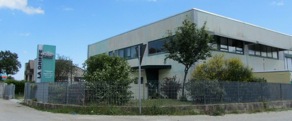

Chi siamo:

L'azienda è stata fondata nel 1992, come evoluzione di una precedente esperienza imprenditoriale nel settore della serigrafia. Oltre alla stampa serigrafica, che ancora oggi rimane una delle principali attività dell'azienda, abbiamo nel tempo ampliato il nostro campo di intervento, fino a coprire i più importanti settori della grafica e della comunicazione visiva, come cartellonistica, insegnistica e stampa digitale.
Organizzazione interna aziendale
Tutti i prodotti che offriamo al cliente finale vengono lavorati e gestiti internamente alla nostra azienda, in questo modo riusciamo a garantire affidabilità ed un completo controllo di qualità sul prodotto.
L'azienda infatti dispone di reparti e di attrezzature all'avanguardia:
-
Stampa digitale a solventi e taglio di prespaziato con plotter di ultima generazione (Roland, Canon, Mimaki, Adobe, Apple)
-
Carpenteria, verniciatura, taglio, assemblaggio ed impianti
-
altre....
Garanzia su prodotti e lavorazioni:
(logo aifil) La nostra azienda è da anni associata AIFIL (Associazione Italiana Fabbricanti Insegne Luminose (link sito aifil)), attraverso la quale offriamo gratuitamente ai nostri clienti un assicurazione di responsabilità civile sul prodotto installato.
Nelle nostre forniture utilizziamo solo materiali di alta qualità, la cui affidabilità è garantita dagli stessi produttori.
(logo 3M, MacTac, Osram, Dibond, Forex, Altuglas)
Soluzioni per ogni tipologia di cliente:
Promozione pubblicitaria di aziende ed attività commericiali
Hai intenzione di aprire una attività commerciale? Vuoi rinnovare l'immagine della tua azienda? Abbiamo la soluzione che fa per te!
Grazie alla nostra esperienza ventennale, possiamo consigliarti le scelte e le strategie da adottare per ottenere visibilità nel mercato.
Offriamo ai nostri clienti un servizio a 360 gradi:
-
Progettazione grafica e strutturale
-
Espletamento delle pratiche burocratiche
-
Realizzazione
-
Installazione
-
Assistenza post-vendita (riparazioni e manutenzione)
Servizi per l'industria
Etichette per prodotti indutriali, serigrafia e stampa sui pezzi termoformati ecc.
Servizi per gli enti pubblici
cartelli stradali, display....